Last updated: 2026-10-26
Checks: 6 1
Knit directory: long_read_rna/
This reproducible R Markdown analysis was created with workflowr (version 1.7.0). The Checks tab describes the reproducibility checks that were applied when the results were created. The Past versions tab lists the development history.
The R Markdown file has unstaged changes. To know which version of
the R Markdown file created these results, you’ll want to first commit
it to the Git repo. If you’re still working on the analysis, you can
ignore this warning. When you’re finished, you can run
wflow_publish to commit the R Markdown file and build the
HTML.
Great job! The global environment was empty. Objects defined in the global environment can affect the analysis in your R Markdown file in unknown ways. For reproduciblity it’s best to always run the code in an empty environment.
The command set.seed(20260908) was run prior to running
the code in the R Markdown file. Setting a seed ensures that any results
that rely on randomness, e.g. subsampling or permutations, are
reproducible.
Great job! Recording the operating system, R version, and package versions is critical for reproducibility.
Nice! There were no cached chunks for this analysis, so you can be confident that you successfully produced the results during this run.
Great job! Using relative paths to the files within your workflowr project makes it easier to run your code on other machines.
Great! You are using Git for version control. Tracking code development and connecting the code version to the results is critical for reproducibility.
The results in this page were generated with repository version 61785e0. See the Past versions tab to see a history of the changes made to the R Markdown and HTML files.
Note that you need to be careful to ensure that all relevant files for
the analysis have been committed to Git prior to generating the results
(you can use wflow_publish or
wflow_git_commit). workflowr only checks the R Markdown
file, but you know if there are other scripts or data files that it
depends on. Below is the status of the Git repository when the results
were generated:
Unstaged changes:
Modified: analysis/index.Rmd
Modified: analysis/isolaser_fdr_panel10.Rmd
Modified: analysis/isolaser_fdr_panel10nc.Rmd
Modified: analysis/isolaser_fdr_reads10.Rmd
Modified: analysis/isolaser_fdr_reads10nc.Rmd
Modified: analysis/isolaser_gtex_comparison_panel10.Rmd
Modified: analysis/isolaser_gtex_comparison_panel10nc.Rmd
Modified: analysis/isolaser_gtex_comparison_reads10.Rmd
Modified: analysis/isolaser_gtex_comparison_reads10nc.Rmd
Note that any generated files, e.g. HTML, png, CSS, etc., are not included in this status report because it is ok for generated content to have uncommitted changes.
These are the previous versions of the repository in which changes were
made to the R Markdown (analysis/isolaser_fdr_reads10.Rmd)
and HTML (docs/isolaser_fdr_reads10.html) files. If you’ve
configured a remote Git repository (see ?wflow_git_remote),
click on the hyperlinks in the table below to view the files as they
were in that past version.
| File | Version | Author | Date | Message |
|---|---|---|---|---|
| Rmd | 2f66324 | XSun | 2026-10-23 | update |
| html | 2f66324 | XSun | 2026-10-23 | update |
| Rmd | 57da66d | XSun | 2026-10-22 | update |
| html | 57da66d | XSun | 2026-10-22 | update |
Earlier setup. This page keeps the clustering filter, which the current analyses drop. Current pages: read-based isoLASER (main analysis) and transcript-based isoLASER.
This page repeats transcript-based isoLASER with one change: each read’s inclusion label comes from its own alignment. The transcript-based page and its results are unchanged.
What changed (our definitions):
cis / |ΔPSI| ≥ 0.10 screen.Main result: 42 associations in 19 genes have q < 0.05 and pass the screen, against 64 in 26 genes in the transcript-based run. 7 genes are reported in both. The reported effects of the transcript-based run mostly vanish with read-based labels, while this run’s effects are already visible, in the same direction, in the transcript-based run (details).
| Timepoint | Tested associations | Paper’s cutoff | Screen | Screen + q < 0.10 | Screen + q < 0.05 |
|---|---|---|---|---|---|
| 0hr | 21,695 | 6,244 (751) | 123 (71) | 18 (9) | 10 (5) |
| 1hr | 31,944 | 5,866 (961) | 190 (113) | 19 (10) | 18 (9) |
| 6hr | 34,250 | 6,396 (1,065) | 216 (128) | 29 (13) | 24 (11) |
| any timepoint | 40,879 | 12,880 (1,719) | 472 (256) | 54 (25) | 42 (19) |
Cells other than Tested associations show associations (genes).
cis
call with no other filter, as in the isoLASER paper. Here it comes from
the joint output of the read-based run, so it differs from the
transcript-based page’s.cis rule computed on
the panel-heterozygous donors only, plus |ΔPSI| ≥ 0.10.Any timepoint counts each gene or variant–part association once across timepoints. BH targets FDR within each timepoint’s full family; the effect-filtered subset and the union across timepoints have no separate 5% FDR guarantee.
| Timepoint | Tested: transcript-based | Tested: read-based | Paper’s cutoff: transcript-based | Paper’s cutoff: read-based | Screen + q < 0.05: transcript-based | Screen + q < 0.05: read-based |
|---|---|---|---|---|---|---|
| 0hr | 40,164 | 21,695 | 10,419 (978) | 6,244 (751) | 25 (12) | 10 (5) |
| 1hr | 60,866 | 31,944 | 11,880 (1,362) | 5,866 (961) | 41 (17) | 18 (9) |
| 6hr | 63,223 | 34,250 | 12,086 (1,350) | 6,396 (1,065) | 35 (16) | 24 (11) |
| any timepoint | 76,939 | 40,879 | 23,251 (2,101) | 12,880 (1,719) | 64 (26) | 42 (19) |
Transcript-based and read-based are the two isoLASER versions, both with the clustering filter; this page is read-based. About half as many associations are testable. Many reads were counted only because of their assigned transcript and never reach the part; they are no longer counted, so fewer associations have 20 reads.
Each reported association (at its timepoint) is looked up in the other run, at the same timepoint:
| In the other run | Reported transcript-based, looked up read-based | Reported read-based, looked up transcript-based |
|---|---|---|
| Reported | 12 | 12 |
| q < 0.05, fails the screen | 0 | 1 |
| Tested, q ≥ 0.05 | 57 | 33 |
| Tested, no score | 2 | 5 |
| Not tested: under 20 reads | 11 | 1 |
| Not recorded: no read labelled | 19 | 0 |
Counts are association × timepoint rows: an association reported at two timepoints counts twice. Not recorded: no donor has a read labelled for this variant × part. With read-based labels this means no read reaches the part with 10 aligned bases or a spanning junction.
| Reported in | Tested in both | Same direction | Median |ΔPSI|, reporting run | Median |ΔPSI|, other run |
|---|---|---|---|---|
| transcript-based | 69 | 45% | 0.440 | 0.003 |
| read-based | 46 | 96% | 0.243 | 0.131 |
Tested in both: reported in one run and scored in the other at the same timepoint. Same direction: the ΔPSI has the same sign in both runs.
The two directions of the comparison look very different:
Genes. Reported in both: ATP5MJ, CRYBB2P1, HNRNPK, PARK7, SNHG5, UBE2Q2P2, ZNF749. Transcript-based only: ALDH3A2, ANKRD36B, ANKRD36C, ASAH1, CHORDC1, CST3, CYBA, DNTTIP2, HSP90B1, KPNA2, LEPROT, LMBRD1, NAA38, PFKP, RPS2, RPS27L, RPS5, TBCA, ZFAND2A. This run only: ATP6V0E2, C20orf96, ENSG00000290928, GNL3, HM13, LAMTOR4, LINC00888, LY6H, POLE4, PPA2, PRH1, UQCC6. Download the gene comparison, or every reported association with its status in the other run: transcript-based’s, this run’s.
The test is the one described on the original page, with the donor and family rules of the transcript-based run. Only the read labels differ.
| Timepoint | Stopped at 1,000 | Stopped at 10,000 | Stopped at 100,000 | Reached 1,000,000 |
|---|---|---|---|---|
| 0hr | 21,463 | 159 | 39 | 34 |
| 1hr | 31,587 | 270 | 45 | 42 |
| 6hr | 33,845 | 305 | 49 | 51 |
Stopped means at least 20 hits at that checkpoint, or no observed score (p = 1). Every association with zero hits after a million shuffles has q < 0.05, so more shuffles would not change the results.
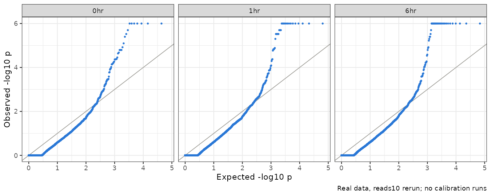
Real data only; there are no calibration runs for this run. As in the transcript-based run, the bulk lies below the diagonal (many ties at an AMI of 0) and the upper plateau is the minimum attainable p-value.
We highlight genes that meet the same two conditions as on the transcript-based page (our definitions):
cis / effect-size screen at 1 or 6 hours, and not at 0
hours.6 genes meet both; four are shown. Not shown: C20orf96 and ENSG00000290928, which have no score at 0 hours, so there is no 0-hour comparison. PARK7 and ZNF749 are also on the transcript-based page; PPA2 and LY6H are new.
| Gene | 0 hr | 1 hr | 6 hr | Best q | Het donors | Relevance |
|---|---|---|---|---|---|---|
| PARK7 | -8 (628) | -19 (1,034) | -10 (1,024) | 0.0023 | 2 | Neuron projection, neuron death (GO); the Parkinson’s disease gene DJ-1 |
| PPA2 | +21 (72) | +46 (107) | +18 (125) | 0.0044 | 3 | Splicing after stimulation (our scan); a GTEx Cerebellum sQTL for this exon |
| LY6H | +15 (180) | +14 (363) | +25 (362) | 0.0014 | 2 | Synaptic signaling (GO) |
| ZNF749 | -26 (88) | -8 (81) | -74 (127) | 0.0014 | 3 | Splicing after stimulation (our scan), at this exon’s donor sites |
0 / 1 / 6 hr: allelic effect in percentage points, alternative minus reference inclusion, with pooled informative coverage in brackets. Best q: the lowest timepoint-specific q-value. Het donors: the largest number of panel-heterozygous donors used, out of four. All numbers refer to each gene’s representative association.
How to read each gene’s figures:
nigiri_plot sashimi renderer with the project’s plotting
fixes. Reads are split into REF (blue) and ALT (orange) and pooled over
the donors used at each timepoint. Yellow marks the tested part.
Coverage and arc numbers are raw read counts, on one scale per gene.
Raw inclusion is each read’s own label, so every
counted read reaches the part; these are the counts the test uses before
it normalizes donors.The tested 46-base part is the extra stretch of PARK7-201’s longer first exon. Its donor site lies 58 bases beyond the other transcripts’ donor site, an alternative 5′ splice site; the transcript-based page tested the adjacent 12-base part of the same stretch. One minor transcript (ENST00000465354) has this part as its whole first exon, which is why the figure’s automatic label reads “alternative first exon”.
ALT (C) reads use the longer first exon less often than REF (T) reads. The effect has the same direction at all three timepoints and in both donors (CD_21 and CD_48), and is largest at 1 hour: −19 pp (q = 0.002), with REF 74% vs ALT 51% and REF 73% vs ALT 57% in the two donors. At 0 and 6 hours it is −8 and −10 pp. The variant (rs226249) lies in the first exon, 18 bases before the shorter exon’s donor site.
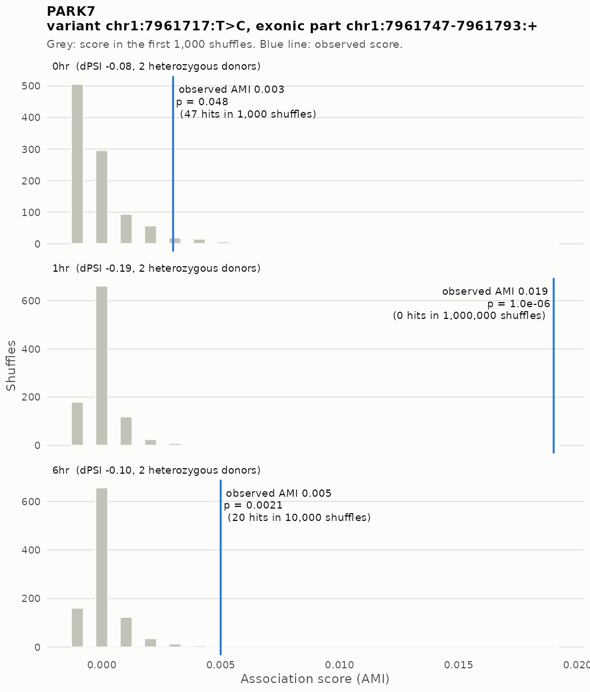
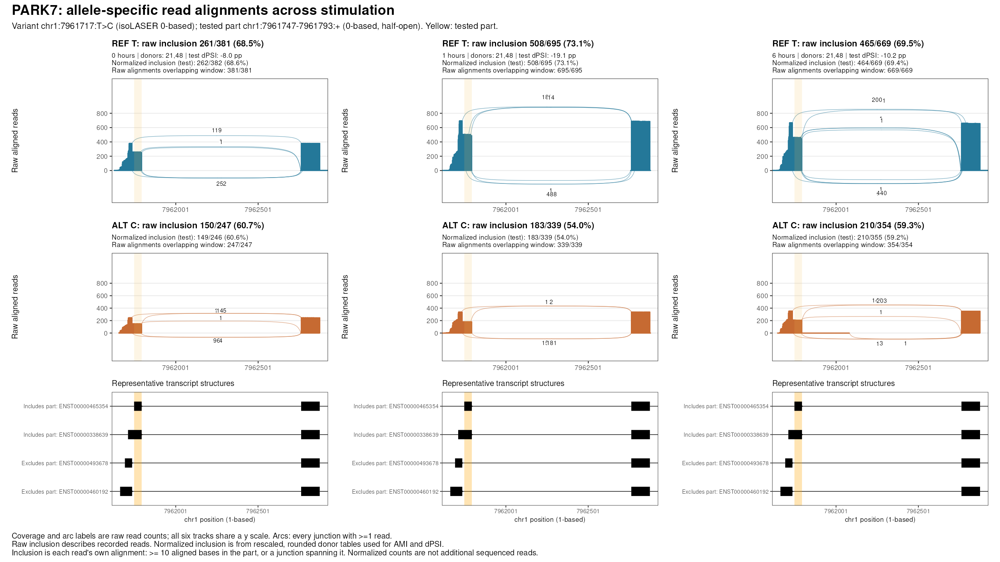
| Timepoint | Donors | REF inclusion (raw) | ALT inclusion (raw) | Test dPSI (normalized, pp) |
|---|---|---|---|---|
| 0 hr | CD_21,CD_48 | 261/381 (68.5%) | 150/247 (60.7%) | -8.0 |
| 1 hr | CD_21,CD_48 | 508/695 (73.1%) | 183/339 (54.0%) | -19.1 |
| 6 hr | CD_21,CD_48 | 465/669 (69.5%) | 210/354 (59.3%) | -10.2 |
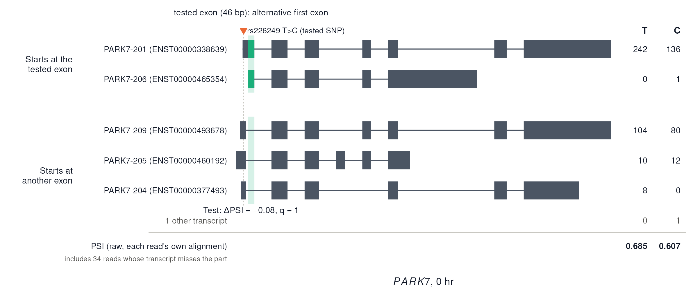
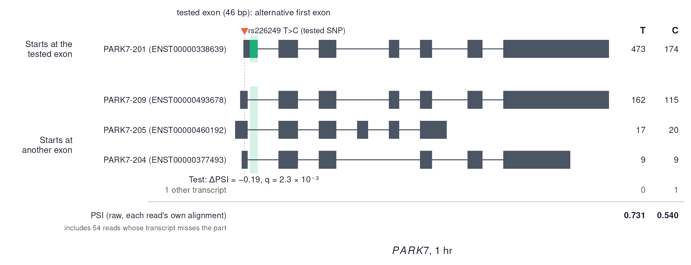
PPA2 encodes the mitochondrial inorganic pyrophosphatase. DDG2P lists a PPA2-related sudden cardiac death disorder, which is not a brain disorder. The tested 27-base part is the last stretch of an 87-base cassette exon. PPA2-202 skips the whole exon, and the reads that exclude the part skip the whole exon: none use the exon’s shorter form.
ALT (G) reads include the exon more often than REF (C) reads. The effect is largest at 1 hour: +46 pp (q = 0.004), from REF 33% vs ALT 77% raw inclusion, with +53 and +36 pp in the two donors (CD_31 and CD_48). At 0 and 6 hours it is +21 and +18 pp, below threshold; CD_36, with 6 to 16 reads per allele, varies between −5 and +12 pp. The tested SNP (rs13787) is in a downstream exon, about 42 kb away in the genome. GTEx Cerebellum has a strong sQTL at the same SNP for this exon’s skipping junction (p = 1 × 10⁻¹⁹), with the opposite sign to our ΔPSI, as expected (GTEx page).
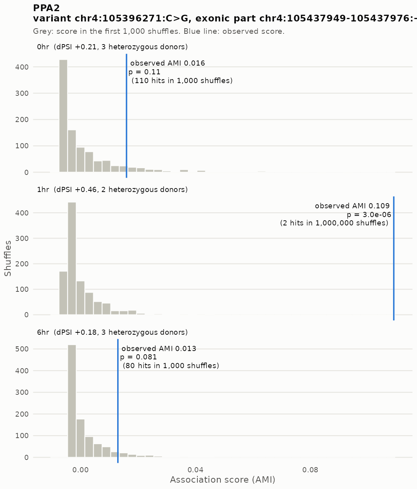
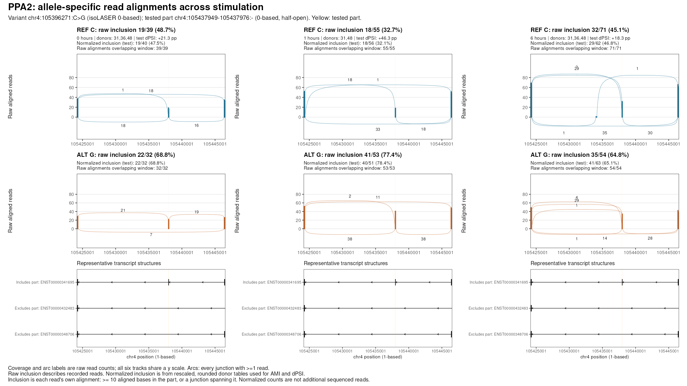
| Timepoint | Donors | REF inclusion (raw) | ALT inclusion (raw) | Test dPSI (normalized, pp) |
|---|---|---|---|---|
| 0 hr | CD_31,CD_36,CD_48 | 19/39 (48.7%) | 22/32 (68.8%) | +21.3 |
| 1 hr | CD_31,CD_48 | 18/55 (32.7%) | 41/53 (77.4%) | +46.3 |
| 6 hr | CD_31,CD_36,CD_48 | 32/71 (45.1%) | 35/54 (64.8%) | +18.3 |
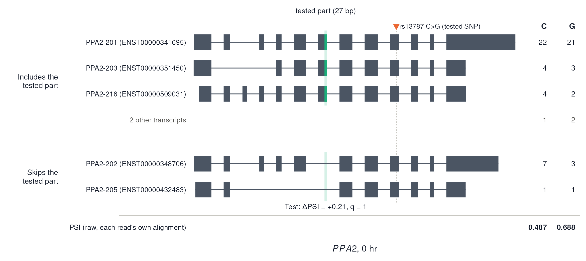
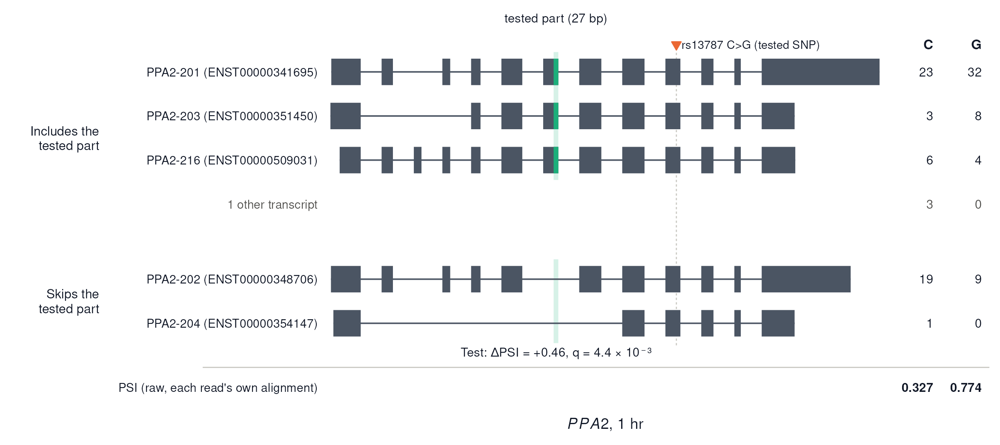
The tested 12-base part is the start of LY6H-201’s first exon. LY6H-202 and LY6H-205 start at an exon further upstream and splice past the part into an exon inside LY6H-201’s first exon. Read coverage ends at LY6H-201’s start site, so reads that include the part start there, and reads that exclude it splice from the upstream exon. The test therefore compares the use of two first exons (our reading of the alignments and annotation).
ALT (G) reads include the part more often than REF (A) reads, so they use the upstream first exon less. The effect has the same direction at all three timepoints and in both donors (CD_21 and CD_31), and is largest at 6 hours: +25 pp (q = 0.001), from REF 66% vs ALT 92% raw inclusion, with +30 and +20 pp in the two donors. At 0 and 1 hours it is +15 and +14 pp, below threshold. The tested SNP (rs10109061) is in the last exon, 1.9 kb from the part. LY6H belongs to the Ly6 family of GPI-anchored, neurotoxin-like proteins. Published work (not our data) reports that it limits surface α7 nicotinic acetylcholine receptors in neurons.
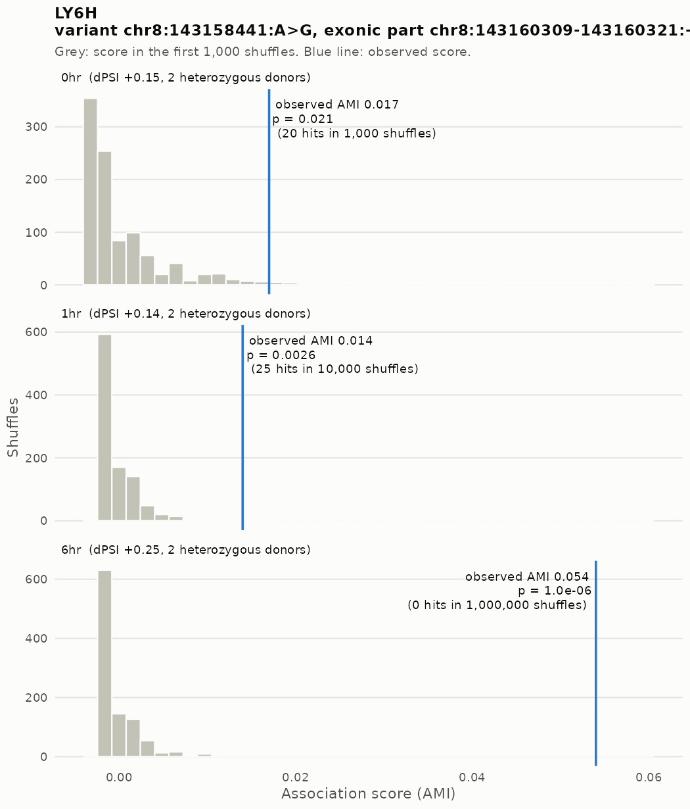
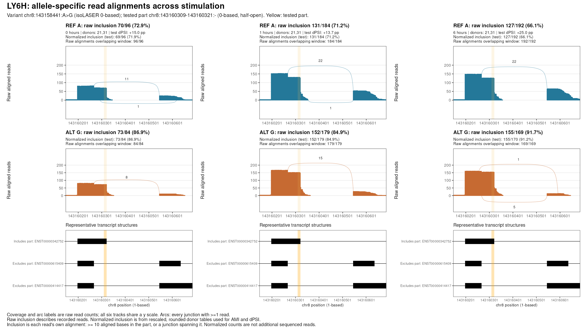
| Timepoint | Donors | REF inclusion (raw) | ALT inclusion (raw) | Test dPSI (normalized, pp) |
|---|---|---|---|---|
| 0 hr | CD_21,CD_31 | 70/96 (72.9%) | 73/84 (86.9%) | +15.0 |
| 1 hr | CD_21,CD_31 | 131/184 (71.2%) | 152/179 (84.9%) | +13.7 |
| 6 hr | CD_21,CD_31 | 127/192 (66.1%) | 155/169 (91.7%) | +25.0 |
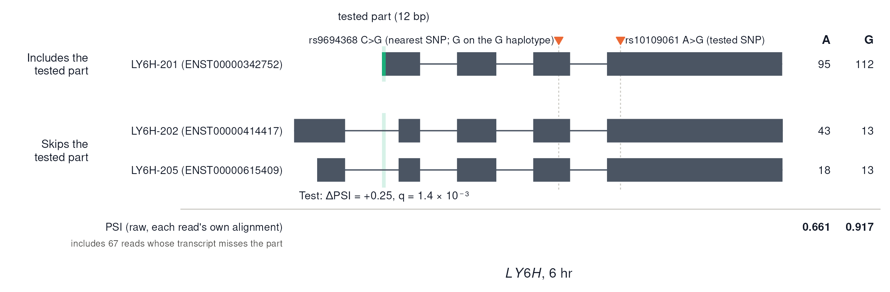
As on the transcript-based page, the tested part is a 355-base alternative last exon. REF (G) reads end in it far more often than ALT (C) reads. The difference is significant only at 6 hours (−74 pp, q = 0.001); at 0 and 1 hours it is −26 and −8 pp. In our stimulation splicing scan, the balance between the two donor sites that splice into this exon shifts between 0 and 6 hours.
As before, the jump at 6 hours partly reflects which donors are used:
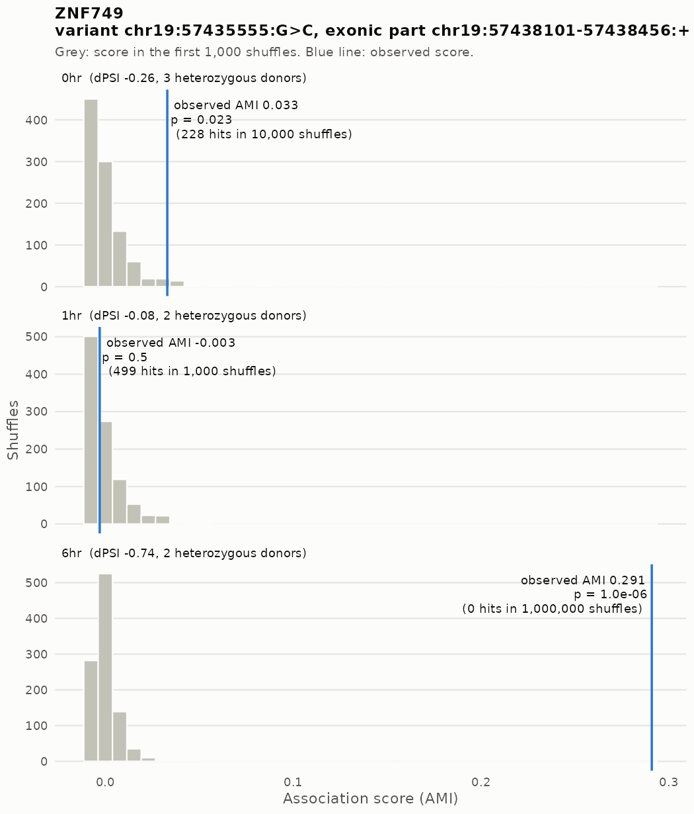
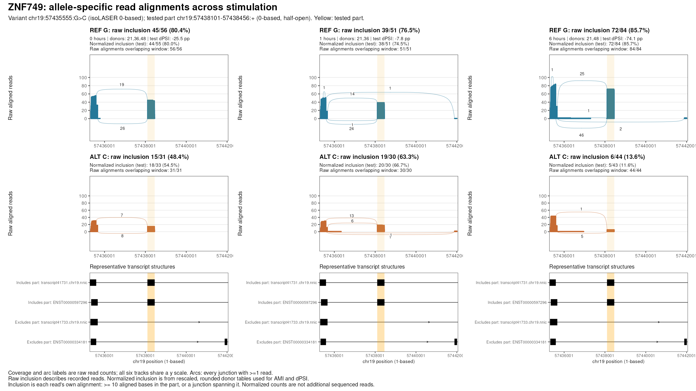
| Timepoint | Donors | REF inclusion (raw) | ALT inclusion (raw) | Test dPSI (normalized, pp) |
|---|---|---|---|---|
| 0 hr | CD_21,CD_36,CD_48 | 45/56 (80.4%) | 15/31 (48.4%) | -25.5 |
| 1 hr | CD_21,CD_36 | 39/51 (76.5%) | 19/30 (63.3%) | -7.8 |
| 6 hr | CD_21,CD_48 | 72/84 (85.7%) | 6/44 (13.6%) | -74.1 |
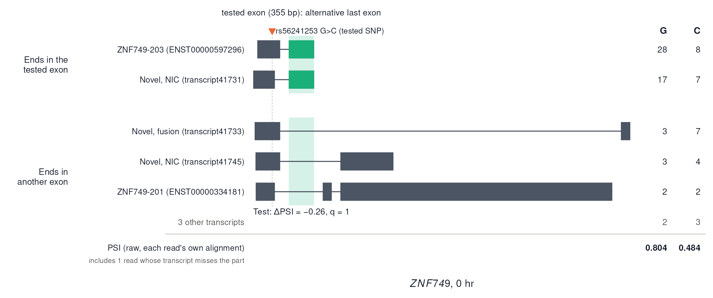
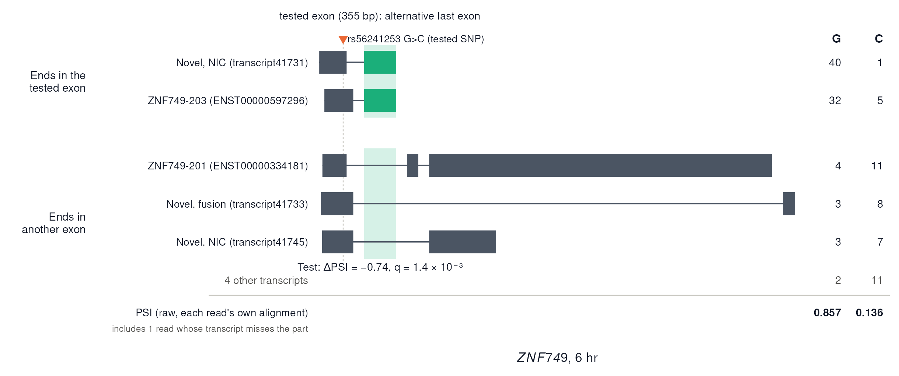
Isoform figures (PDF, and reads per transcript as a table):
PARK7: 0 hr (PDF, reads per transcript); 1 hr (PDF, reads per transcript)
PPA2: 0 hr (PDF, reads per transcript); 1 hr (PDF, reads per transcript)
LY6H: 0 hr (PDF, reads per transcript); 6 hr (PDF, reads per transcript)
ZNF749: 0 hr (PDF, reads per transcript); 6 hr (PDF, reads per transcript)
Sashimi plots: inclusion counts, per-donor counts, normalized test counts, junction counts.
Scripts:
11.fdr_results/8.reads10_examples.sh runs, with
ADAPTIVE_RULE=reads10, 24.plot_association.R,
25.sashimi_candidates.py and
36.refresh_sashimi_labels.R (in
10.isolaser_permutation/), then
4.transcript_counts.py and
7.grant_figure_transcripts.R (in
11.fdr_results/).
Here, reported means q < 0.05 plus the
cis / effect-size screen.
| Pattern | Genes |
|---|---|
| Significant at 3 timepoints | 2 |
| Significant at 2 timepoints | 2 |
| One timepoint; nominal support elsewhere | 10 |
| One timepoint; no nominal support elsewhere | 3 |
| One timepoint; no usable score elsewhere | 2 |
For genes reported at one timepoint, the last three categories describe the representative association at the other timepoints: nominal p < 0.05, p ≥ 0.05 where scored, or no usable score. They are not tests of an allele × time interaction. Among comparisons of significant associations with another timepoint, 82% had nominal p < 0.05 there and 100% had the same effect direction.
All 19 reported genes. The variant, part, timepoint effects, best q and donor count refer to the representative association; Significant at describes the gene across all its associations. In transcript-based marks genes also reported in the transcript-based run.
0 / 1 / 6 hr: allelic effect in percentage points, alternative minus reference inclusion, with pooled informative coverage in brackets. The annotations use the same rules as on the original page. They help select examples and are not enrichment tests.
Data: 10.isolaser_permutation/ with
ADAPTIVE_RULE=reads10: the read-based isoLASER run from
40.make_reads_copy.py and
41.reads_record.sbatch /
42.reads_joint.sbatch, checked by
43.check_reads_record.py; inputs from
38.prepare_panel_inputs.R, then scripts 18–22, with the
independent score check 48 / 50. This page’s
tables come from 11.fdr_results/3.page_tables.R with
ADAPTIVE_RULE=reads10, which writes only to
docs/assets/fdr_reads10/.
R version 4.2.0 (2022-04-22)
Platform: x86_64-pc-linux-gnu (64-bit)
Running under: Red Hat Enterprise Linux 8.4 (Ootpa)
Matrix products: default
BLAS/LAPACK: /software/openblas-0.3.13-el8-x86_64/lib/libopenblas_skylakexp-r0.3.13.so
locale:
[1] LC_CTYPE=C.UTF-8 LC_NUMERIC=C LC_TIME=C.UTF-8
[4] LC_COLLATE=C.UTF-8 LC_MONETARY=C.UTF-8 LC_MESSAGES=C.UTF-8
[7] LC_PAPER=C.UTF-8 LC_NAME=C LC_ADDRESS=C
[10] LC_TELEPHONE=C LC_MEASUREMENT=C.UTF-8 LC_IDENTIFICATION=C
attached base packages:
[1] stats graphics grDevices utils datasets methods base
other attached packages:
[1] DT_0.22 data.table_1.14.4 workflowr_1.7.0
loaded via a namespace (and not attached):
[1] Rcpp_1.0.11 compiler_4.2.0 pillar_1.9.0 bslib_0.3.1
[5] later_1.3.0 git2r_0.30.1 jquerylib_0.1.4 tools_4.2.0
[9] getPass_0.2-2 digest_0.6.29 jsonlite_1.8.7 evaluate_0.15
[13] lifecycle_1.0.4 tibble_3.2.1 pkgconfig_2.0.3 rlang_1.1.2
[17] cli_3.6.2 rstudioapi_0.14 crosstalk_1.2.0 yaml_2.3.5
[21] xfun_0.38 fastmap_1.1.0 httr_1.4.5 stringr_1.5.0
[25] knitr_1.42 htmlwidgets_1.6.2 sass_0.4.1 fs_1.5.2
[29] vctrs_0.6.1 rprojroot_2.0.3 glue_1.6.2 R6_2.5.1
[33] processx_3.5.3 fansi_1.0.3 rmarkdown_2.21 callr_3.7.0
[37] magrittr_2.0.3 whisker_0.4 ellipsis_0.3.2 ps_1.7.0
[41] promises_1.2.0.1 htmltools_0.5.7 httpuv_1.6.5 utf8_1.2.2
[45] stringi_1.7.6